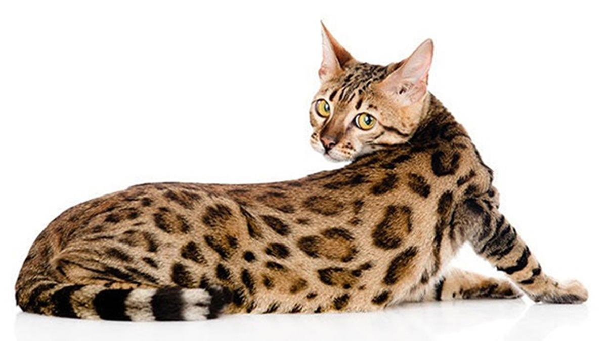

Diseño de interfaces
Actividad 3.1
El gato bengalí o gato leopardo, es un gato grande, elegante y muy musculoso, con una cola espesa que suele llevar baja. El aspecto salvaje del bengalí lo realza su característico pelaje: moteado o marmolado, espeso y suntuoso. Su cabeza ancha tiene orejas pequeñas y mejillas pronunciadas, los ojos tienen un contorno negro y forma almendrada. La cola es gruesa, aunque se estrecha hacia la punta, de color negro.